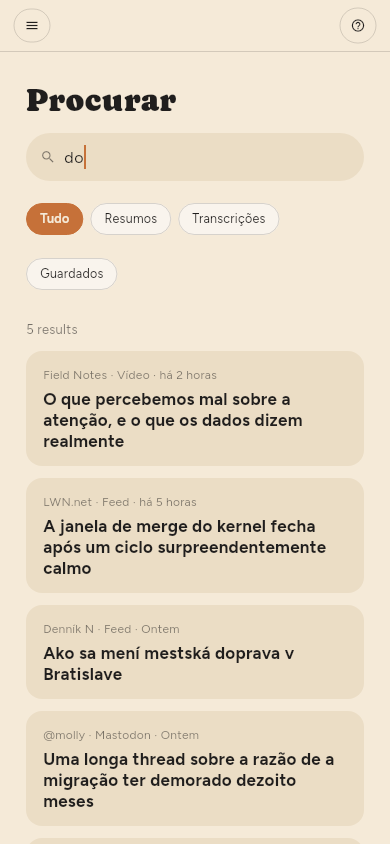
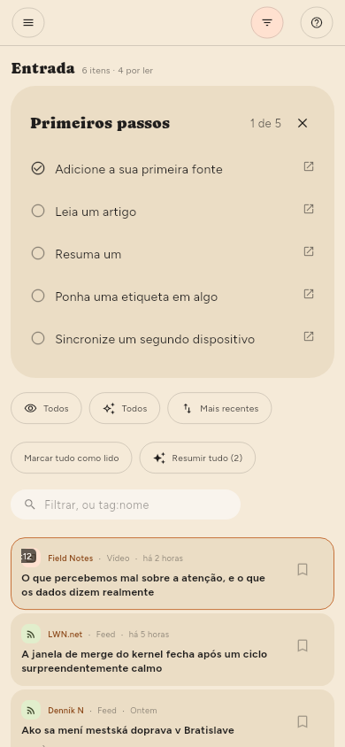

← Resumos · Índice · Guardar coisas →
Encontrar coisas
Procurar na estante, ou /.
A pesquisa abrange títulos, texto dos artigos e transcrições de vídeos. Um resultado numa transcrição é um momento — indica a hora e salta para lá quando o abre. Um item sem título encontra-se pelo seu endereço.

A caixa de texto do painel de filtros é outra coisa: reduz a lista que tem à frente em vez de abrir resultados próprios. Procura no título, no nome da fonte e no resumo — Procurar também lê o texto dos artigos e as transcrições.

Cada filtro pergunta à biblioteca inteira, não à parte dela que está no ecrã. Uma palavra, uma etiqueta, Por ler, Por resumir, um feed, um tipo: cada um é respondido a partir do armazenamento, por isso o número por cima da lista é o número de coisas que existem. tag:linux encontra tudo o que tem essa etiqueta, por mais antigo que seja; duas etiquetas reduzem em vez de alargar, e um valor com um espaço vai entre aspas: tag:"machine learning".
Etiquetas (só Premium)
As etiquetas de um artigo são os temas que o resumo destacou, e pode mudá-las à vontade: os chips por baixo do título no leitor acrescentam e removem, e clicar num mostra tudo o que o tem.
Também se pode pôr etiquetas numa fonte, no painel dela — e um artigo é filtrado pelas etiquetas da sua fonte, além das suas, por isso pôr uma etiqueta num feed organiza os cem artigos que já lá estão e não só os que chegarem a seguir.
Todas as etiquetas em uso aparecem em Etiquetas na estante, com o que cada uma contém. Clicar numa reduz a lista; clicar outra vez limpa o filtro.